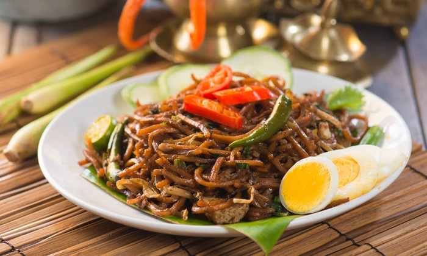
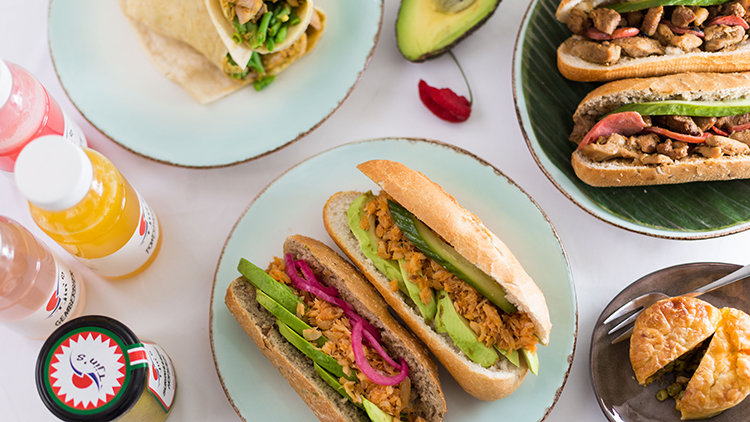

5 x de beste Surinaamse restaurants
In Nederland stikt het van de Surinaamse restaurants, eethuisjes en toko’s, maar waar eet je nu het best? Wij zetten de beste Surinaamse restaurants en toko’s in Nederland voor je op een rij.
Roopram Roti:
Deze restaurantketen, die welbekend is in Paramaribo, is een favoriet onder vele Surinaamse Nederlanders. Met name de roti kip met botjes voor extra smaak zorgt voor de ellenlange rijen bij Roopram. Zet je tanden in je rotirol en je bent het wachten direct vergeten. Roopramroti.nl
Warung Spang Makandra:
Deze Javaans-Surinaamse spot een van de beste plekken om rollend de deur uit te gaan voor een schappelijke prijs. Denk aan: smakelijke Indo Rames, Tjauwmin met tempeh (vega!) en saoto voor een prikkie. Spangmakandra.nl
Tjin’s Toko:
Wat mij betreft haal je het beste broodje pom, uiteraard met extra peper en zuur, bij Tjin’s. Ze verkopen niet alleen kant-en-klare gerechten en broodjes, maar zo ongeveer elk exotisch ingrediënt dat je je kan bedenken. Tjinstoko.nl
Ricardo’s:
Een van de beste Surinaamse restaurants in Amsterdam Oost. Na jaren in verschillende restaurants in Amsterdam te hebben gewerkt, besloot Ricardo in 2007 zijn eigen zaak te openen. Eetricardos.nl
Millie's Corner:
De naam Millie’s komt van de eigenaresse Mevrouw Mildrid Khoeblal. Een Surinaamse vrouw met een enorme passie voor koken. En die liefde voor koken proef je dubbel en dwars terug in het eten. Tot op de dag van vandaag is Millie’s Corner een begrip voor de meeste Utrechters en wordt er met niets dan liefde gesproken over dit familiebedrijf. Milliescorner.nl